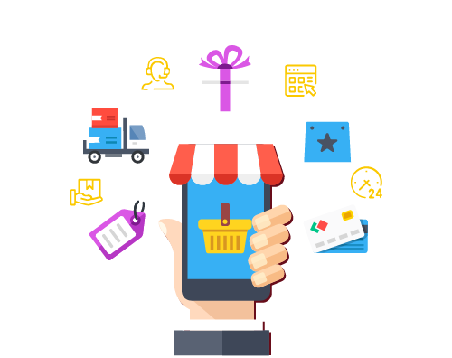
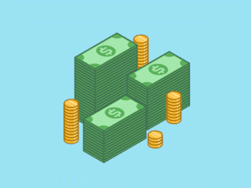

Perfil Empreendedor
O bom empreendedor, ao agregar valor a produtos e serviços, está permanentemente preocupado com a
gestão de recursos e com os conceitos de eficiência e eficácia. Drucker (1998) não vê os empreendedores
causando mudanças, mas vê os empreendedores explorando as oportunidades que as mudanças criam
(na tecnologia, na preferência dos consumidores, nas normas sociais etc).
Isso define empreendedor e empreendedorismo: o empreendedor busca a mudança, e responde e explora a mudança
como uma oportunidade.
Conheça os custos do negócio
Muitos empreendedores iniciantes, por falta de conhecimento do mercado, não conseguem enxergar todos
as despesas que terão durante as suas atividades. Gastos como o 13º de funcionários e o FGTS
devem ser levados em consideração na hora de contratar, recomenda-se a formação
de uma reserva de contingência para que o empreendedor não seja pego desprevenido.
Fonte : Empreendedorismo: Conceitos e Definições.

Estou pronto para ter um empreendimento ?
Todo empreendedor deve se perguntar se está pronto para se tornar um líder.
Além de estudar e conhecer muito todos os aspectos do seu novo negócio, deve ter
consciência de que agora será o maior responsável pelas tomadas de decisão do lugar onde trabalha.
O que ocorre, porém, é que apesar das boas intenções e da iniciativa, a falta de planejamento,
em boa quantidade dos casos, acaba deixando esses empreendedores reféns de um novo chefe: os bancos.
Os números de fechamentos prematuros de empresas poderiam ser bem menores se os empresários
tomassem certas precauções antes mesmo da inauguração.
Recomendação
É recomendado que sejam realizados cursos de capacitação em diversas áreas, como administração, marketing
e até um coaching empresarial. Você será o grande responsável pelo sucesso ou fracasso da empresa,
por isso evite passar decisões importantes para terceiros.
Confira abaixo a lista de plataformas para ajudar no seu crescimento:

Defina o Capital Inicial
Complementar o capital inicial da empresa com recursos dos bancos pode ser a sentença de extinção da empresa.
Nos primeiros meses, a lucratividade pode não ser alta o suficiente para compensar essas dívidas, gerando juros,
e isso dificultará bastante ficar no orçamento.
Ao calcular o capital inicial, leve em consideração todos os recursos essenciais para dar inicio às
atividades,que vão desde a aquisição de mercadorias e máquinas, até mesmo gastos com a decoração da loja.
Manter um capital de giro para as despesas dos primeiros meses também é uma boa forma para evitar
futuras dores de cabeça.
Fonte : Blog Conta Azul
Viabilidade da ideia
Um produto revolucionário que promete aquecer uma casa em poucos segundos pode ser um sucesso
no sul do país, mas, certamente, será um fracasso no nordeste. Antes de investir, o empreendedor deve fazer
um rigoroso estudo do mercado. Além de identificar os futuros clientes e suas necessidades, apresentando
soluções reais para elas, o empresário deve conhecer os serviços e preços praticados pela concorrência.
Dessa forma, ele será capaz de desenvolver seu diferencial para se destacar no mercado.